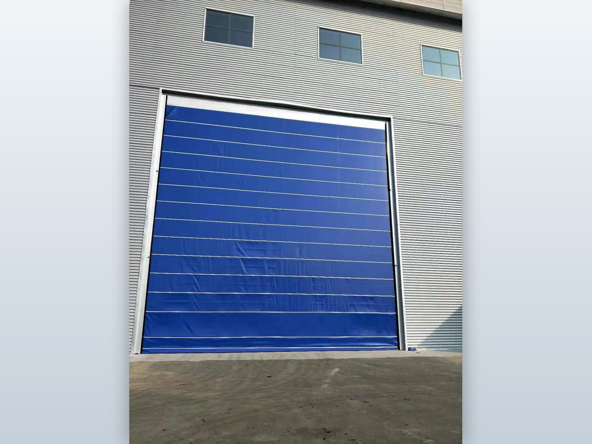
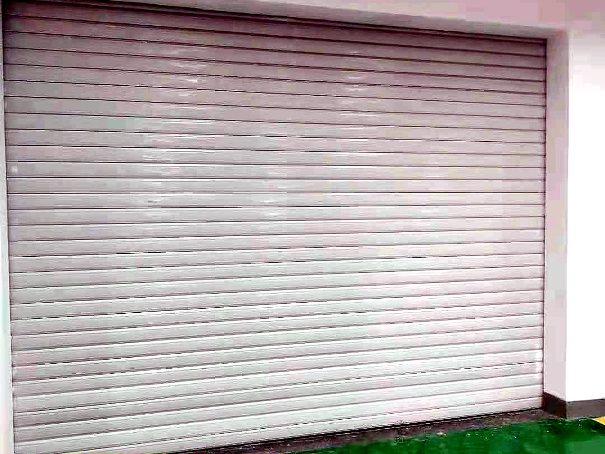
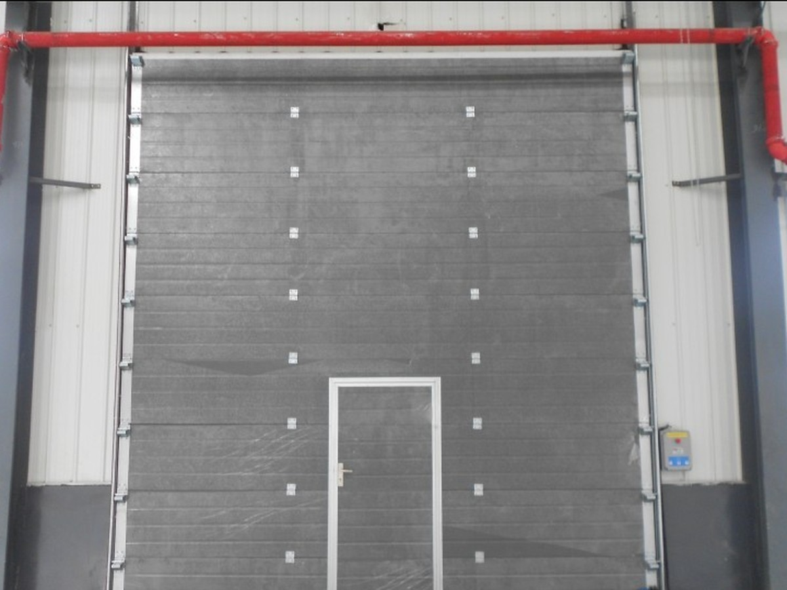
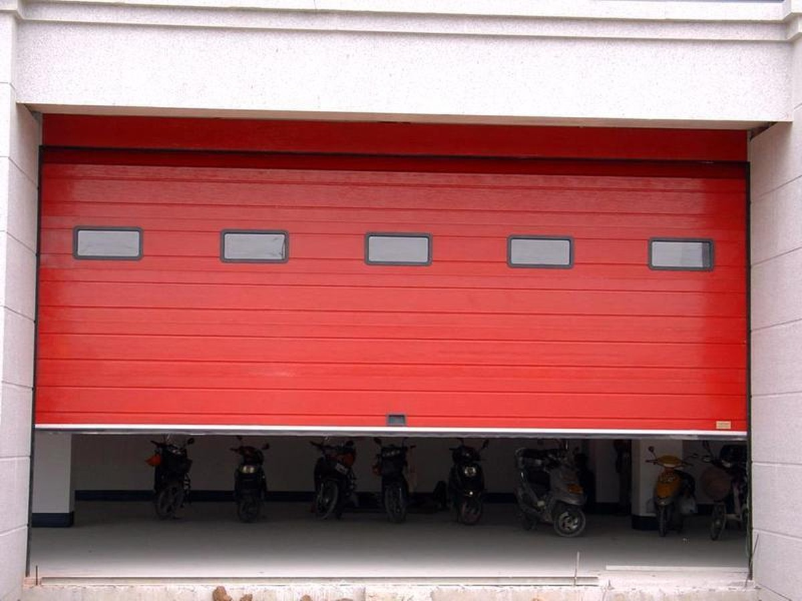
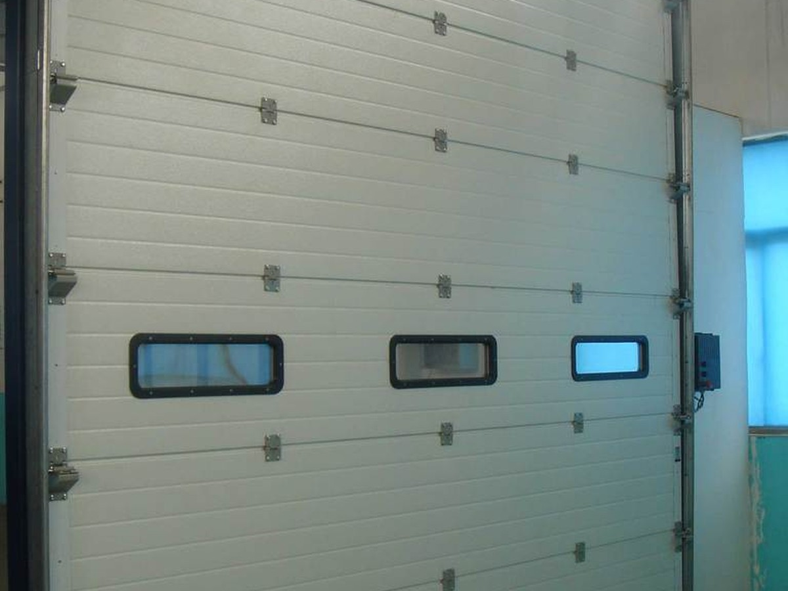

先看标准：JG/T 353-2012 管什么
《工业滑升门》JG/T 353-2012 是建筑工业行业产品标准，2012 年 8 月 1 日实施，适用于工业建筑出入口使用的滑升门，规定了术语与分类、代号标记、一般要求、性能要求、试验方法与检验规则。配套的开门机标准是 JG/T 325《工业滑升门开门机》；卷帘类产品对应的标准则是 JG/T 302-2022《卷帘门窗》，两类不要混用。
对采购方来说，这份标准最实际的用处是：验收时有据可依。门板厚度、平衡性能、安全装置、运行噪声这些都可以对照标准条款核，而不是只听厂家说“我们的门很结实”。
提升方式：这一步决定土建
| 方式 | 门体去向 | 需要什么条件 | 常见位置 |
|---|---|---|---|
| 标准提升 | 沿导轨上提，门体收在门楣下方 | 门楣到顶棚的净高约等于门高 | 普通厂房、仓库 |
| 高位提升 | 提升高度超过门洞，门体贴近顶棚 | 层高较高，需加长导轨与特殊铰链 | 层高充裕的车间、需要净空的门洞 |
| 垂直提升 | 门体整体垂直上升，不占侧向与前方空间 | 门楣上方有完整垂直空间 | 消防站、车库、通道进深受限处 |
这一项要在土建阶段定。很多项目是门装完了才发现提升高度不够、门体顶到消防管，只能改门型或改管线，代价远高于提前算一次。
平衡与安全：两个不能省的部分
扭簧平衡
分节门体很重，靠扭簧平衡重量，电机只负责克服剩余阻力。扭簧是有寿命的受力件，不是装上去就一劳永逸：疲劳断裂会让门体瞬间失去支撑，所以必须按周期检查，并在设计上配防坠落。
安全装置
- 防坠落：钢丝绳或链条断裂时的机械止挡，是滑升门的底线配置。
- 底边保护：门体下行遇阻回弹，保护人员与车辆。
- 光电对射：门洞两侧检测，人员通过时阻止关门。
- 手动释放：停电时用链条或手摇把门打开。
保温与密封：冷库、车间、消防站为什么都用它
门板是聚氨酯夹芯板（常规 40 mm），板间靠铰链连接、边缘配密封条，四周再加顶部、侧边、底部三道密封。这决定了它在保温、隔音、防尘上明显优于卷帘门和软帘门，也是冷库、洁净车间、消防站车库的常见选择。
密封效果不只看门板：门槛做法、导轨与墙体的收口、门洞四周的平整度，都会在缝隙上体现出来。同一款门，收口做得好与差，冬天门口的温度能差出一截。
三个常见变体
- 柔性提升门：门体轻、成本低，适合对保温要求不高的位置。
- 透明提升门：门板带采光窗或整体透光，用于需要自然光的车间与展厅。
- 车库提升门：尺寸与装饰面更接近民用，用于 4S 店、车库、别墅车库。
参数参考
| 项目 | 常规配置区间 | 说明 |
|---|---|---|
| 适用洞口宽 | 3–8 m | 更宽需按门体重量与导轨核算 |
| 适用洞口高 | 3–8 m | 提升方式影响所需净高 |
| 门板 | 聚氨酯夹芯板，常规 40 mm | 厚度与钢板厚度按保温要求配置 |
| 平衡 | 扭簧平衡 | 按周期检查与更换 |
| 驱动 | 工业开门机（JG/T 325） | 可配遥控、地磁、门禁联动 |
| 安全 | 防坠落、底边保护、光电 | 人员通行位置建议全配 |
维护：把扭簧当耗材看
| 周期 | 项目 | 说明 |
|---|---|---|
| 每月 | 运行听音、底边保护测试 | 异响多为导轨异物或滚轮磨损 |
| 每季度 | 铰链、滚轮、密封条检查 | 密封条老化会直接反映在能耗上 |
| 每半年 | 钢丝绳、防坠装置、紧固件 | 钢丝绳断丝要整根更换，不做局部接续 |
| 按周期 | 扭簧检查与更换 | 按厂家给的寿命周期执行，不等到断 |
项目实拍



提升门图集





常见问题
工业滑升门和快速门怎么选？
看频率和保温。每天开合几十次、对保温密封有要求（冷库、洁净区、消防站），选滑升门；每小时十几次以上的高频通道，选快速门。两者的定位不同，很多厂房是外墙用滑升门、内部通道用快速门。
扭簧多久要换？
按设计寿命和使用频率算，不能一概而论。高频使用的位置周期短，低频位置周期长。关键是把它列入计划检修：扭簧断裂是突然失效，门体会瞬间失去支撑，靠防坠装置兜底，但不能替代定期更换。
提升方式能不能后期改？
很难。提升方式决定了导轨长度、铰链形式、门楣空间和顶棚净高，属于土建阶段就要定的内容。后期改通常要连导轨和门体一起换，成本接近新装。
能不能只换门板，保留原有导轨和开门机？
要看原导轨的规格、磨损程度和开门机是否匹配新门体的重量。多数老门改造是门板+平衡系统一起换，开门机视状态决定。这类项目我们会先看现场再报价。
参考标准
- JG/T 353-2012《工业滑升门》
- JG/T 325《工业滑升门开门机》
- GB/T 7106-2019《建筑外门窗气密、水密、抗风压性能检测方法》
本页更新于 2026-10-17。以上标准为产品选型与验收的通用依据，具体执行版本以项目所在地区现行有效版本为准。